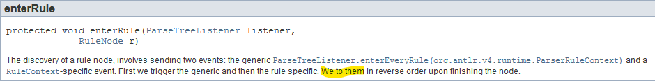

-
Updated
Mar 29, 2020 - Java
#
C++

C++ is a popular and widely used mid-level language. It was designed as an extension of the C language.
Here are 22,751 public repositories matching this topic...
azl397985856
commented
Mar 23, 2020
对于数组[1, 2, 3, 4] 和 [4, 3, 2, 1] 你的冒泡排序算法是否都能获得不错的效率？
Fleischner
commented
May 14, 2019
Team up with vcpkg
Related: microsoft/vcpkg#6154
Sync/verify port descriptions (vcpkg <-> awesome-cpp)
Sync/verify port license information (vcpkg <-> awesome-cpp)
Library Homepage (vcpkg <- awesome-cpp)
Vcpkg availability, operating system support, version, build status (vcpkg -> awesome-cpp)
Dependency level; level0=no deps; level1=depends on any level0; ... (vc
grochocki
commented
Jul 18, 2019
Problem Statement
Today, we treat each converter type as a high-level navigation item. This means that if you want to switch between volume and weight converters, you need to navigate to an entirely different page. While we do offer shortcuts to switch between modes, they are not very discoverable (#157), and parsing a mixed list of calculators and converters is unnecessarily more complex tha
OpenPose: Real-time multi-person keypoint detection library for body, face, hands, and foot estimation
opencv
machine-learning
multi-threading
real-time
caffe
computer-vision
deep-learning
cpp
cpp11
human-pose-estimation
human-behavior-understanding
cvpr-2017
openpose
-
Updated
Jan 22, 2020 - C++
lucmaa
commented
Apr 10, 2019
infer version v0.15.0
in my case, 0xFFFF or 0xFFFFFFFF is a common initializer and there are a lot of this semantics in our code. I would like to ignore those harmless. but if I turn off liveness checker, I worry about missing some truely harmful bugs. Does Infer provide some filtering option or method?
c
algorithm
database
leetcode
cpp
stl
interview
operating-system
data-structures
interviews
interview-practice
interview-questions
interview-preparation
-
Updated
Mar 18, 2020 - C++
jug007
commented
Mar 25, 2020
I was not able to find any instructions on where to put the keys.prod file.
Someone in discord told me it goes into ~/.local/share/yuzu/keys/
That folder was not even created by yuzu.
I feel like the folder should be created by yuzu at runtime and that there should be instructions on where to put the keys.prod file in the first place.
I was using build 20200324-2e484ccc7 for this.
simonsan
commented
Nov 2, 2019
Right now we give the following information (e.g.):
openage v0.4.0-69-g9412facd
opengl
MSVC 19.16.27032.1 [/DWIN32 /D_WINDOWS /W3 /GR /EHsc /MP]
Cython 0.29.14
For future debugging on the user side we could give more information:
- OpenGL version number
- nyan-lib version number
- libc
- sdl-version
- Qt-version
- maybe even opus-codec version
In addition:
jj quote:
per-gron
commented
Dec 18, 2019
The C++ howto and //examples/helloworld/cc:hello_world target depend on //cc:cleartext_keytext_handle which does not have public visibility in Bazel. As far as I can tell it is not
galkinvv
commented
Jan 21, 2020
The doc is great! Hoewever some areas are still missing.
C++11 intoduced raw string literals: https://en.cppreference.com/w/cpp/language/string_literal
It is useful in many different areas, like strings with quotes, multiline strings and for example windows paths without escaping backslashes:
const char win_path[] = R"(c:\some\unescaped\path)";The same cppreference link als
AMS21
commented
Mar 22, 2020
Library name: Copperspice
Library description: CopperSpice is a set of individual libraries which can be used to develop cross platform software applications in C++.
Source repository URL: https://github.com/copperspice/copperspice
Project homepage (if different from the source repository): https://www.copperspice.com/
Anything else that is useful to know when adding (such as optional
matiTechno
commented
Dec 19, 2019
Frequent bug: while sorting by y-coordinate, the vertices are sorted, but the data coming with the vertices is not.
Gouraud shading, forgot to sort intensities
In my case I was calculating a barycentric coordinate of one vertex and assigning it to a different vertex by mistake.
The artifacts looked exactly the same as you presented, if it is the same problem then the description could be
duncanspumpkin
commented
Mar 27, 2020
Really easy little refactor. We use the following macro to loop over all peeps:
FOR_ALL_PEEPS(sprite_index, peep)
It basically does something similar to:
for (spriteIndex = gSpriteListHead[SPRITE_LIST_PEEP]; spriteIndex != SPRITE_INDEX_NULL; spriteIndex = nextSpriteIndex)
{
auto peep = &(get_sprite(spriteIndex)->peep);
nextSpriteIndex = peep-
chriseth
commented
Mar 26, 2020
The type checker contains multiple occurrences of
if (noErrors)
for (Source const* source: m_sourceOrder)
if (source->ast)
for (ASTPointer<ASTNode> const& node: source->ast->nodes())
if (ContractDefinition* contract = dynamic_cast<ContractDefinition*>(node.get()))
These should be extracted into some helper "forAllContracts" or something like that, which takes
egraether
commented
Nov 26, 2019
The current graph zoom level should be stored to the ApplicationSettings, but not displayed in the preferences dialog.
Implementation suggestion:
- in
ApplicationSettingsadd getter and setter for zoom level - in
QtGraphicsViewstore and load this new setting
XsongyangX
commented
Feb 22, 2020
The ParseTreeWalker class has a typo the runtime documentation of the enterRule method. Here is the link to the docs: https://www.antlr.org/api/Java/index.html

Bartosz Milewski's 'Category Theory for Programmers' unofficial PDF and LaTeX source
-
Updated
Mar 30, 2020 - TeX
jackgerrits
commented
Jan 17, 2020
Vcpkg is a C++ dependency management system that makes installation and consumption as a dependency very easy. We should support this for VW to allow consuming the lib as easy as possible.
Instructions for creating a new package can be found here: https://github.com/microsoft/vcpkg/blob/master/docs/examples/packaging-github-repos.md
devjgm
commented
Jan 20, 2020
Is your feature request related to a problem? Please describe.
No.
Describe the solution you'd like
I'd like the source code to be automatically clang-formatted according to my settings anytime the code is compiled. That is, don't require me to use the contextual menu or keyboard shortcut to format the code. Just auto-format it; just like the code is auto-compiled too.
Well, ther
samwalshnz
commented
Apr 6, 2019
User story:
I'm watching a YouTube video. The person speaking in the video pauses for a moment before sentences. The pauses are long enough to be considered as 'silent' to BackgroundMusic and therefore the music plays, but then the person speaking in the video continues speaking, triggering the music playback to stop. Note: there's also a delay between the moment the person starts speaking a
-
Updated
Mar 15, 2020 - C++
2
jroweboy
commented
Apr 3, 2019
Overview
As suggested in #4623, Citra should support binding a hotkey to activate the frontend microphone implementation. Games that use the microphone tend to enable the mic while launching, even if the game is not going to read the data from the shared page till much later.
My personal design suggestions for implementors:
Support for this feature should fully stop any input stre
henne90gen
commented
Dec 20, 2019
The links on the FAQ page in the wiki still point to the old wiki, which seems to be deprecated.
jbrockmendel
commented
Dec 21, 2019
AFAICT they are equivalent. Found a usage of PyObject_str here and it looks like the optimization isn't made in other places where we just do str(x).
I was happy to see that the usage of PyUnicode_Join was unnecessa
Create charts and diagrams from the command line
chart
charts
csv
dataviz
plots
cpp
graphics
data-visualization
cpp17
plotting
datavisualization
fviz
creating-charts
-
Updated
Jan 29, 2020 - C++
The chat tutorial listed for elixir is outdated. It uses a old version of phoenix and could be confusing to new users who would be learning a oudated set of syntax, application structure, commands i.e.
mix phoenix.createvs.mix phx.create.Also it's missing some steps. For one this they never do
mix ecto.createwithout which the postgres database is not initialized so the app doesn't wo